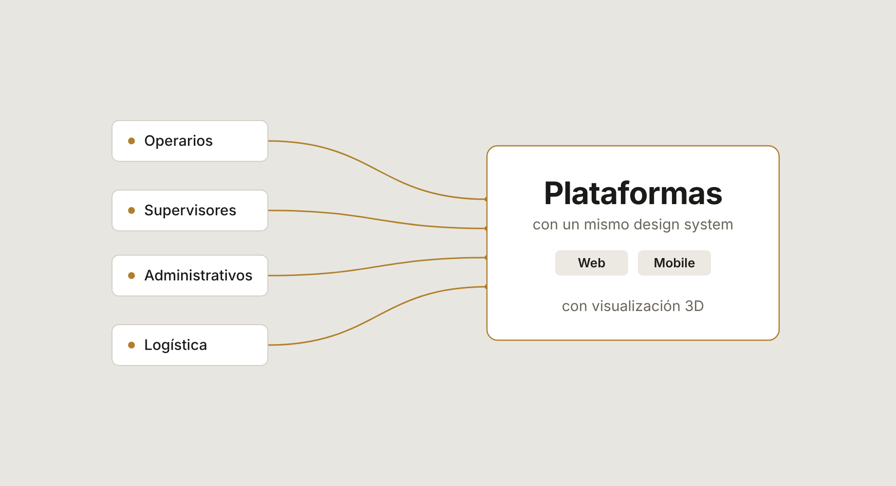

Investigar en contexto
Observé a operarios, supervisores y equipos de logística en planta para entender cómo trabajaban de verdad, no cómo decía el proceso que trabajaban.
Caso 01 · UX/UI Design · Plataformas B2B · Industria
Plataformas de gestión de flota, logística y dashboards de planta para operarios, supervisores, administrativos y equipos de logística, en web responsive y apps mobile.

01 / Introducción
Ternium necesitaba digitalizar procesos de flota, logística y planta que dependían de planillas y de comunicaciones informales entre áreas.
Diseñé plataformas web responsive y apps mobile para que operarios, supervisores, administrativos y equipos de logística cargaran, consultaran y compartieran información desde un mismo lugar. Las plataformas también incorporaron recursos 3D de flota, infraestructura y planos para que la información fuera más fácil de interpretar.
Trabajé en todo el ciclo del producto, desde el discovery hasta después del lanzamiento.
02 / El desafío
En planta, la información de flota y logística se cargaba en planillas y circulaba entre áreas por canales informales. Eso hacía más lentas las tareas y abría la puerta a errores humanos.
Lo que se pidió
Digitalizar los procesos de flota, logística y planta que dependían de planillas.
El problema real
Pasar las planillas a pantallas no alcanzaba. Cuatro roles usaban la misma información con tareas distintas y en contextos distintos, así que cada uno necesitaba cargar y consultar lo suyo desde donde estuviera.
Cargar información sin errores, con pasos claros y validados.
Encontrar rápido lo que importa, según su rol.
Trabajar desde donde estén, en desktop o en el celular.
Compartir información sin depender de planillas ni mensajes sueltos.
03 / Mi enfoque
Cada decisión partió de entender cómo se trabajaba en el lugar y para quién era cada pantalla.
Observé a operarios, supervisores y equipos de logística en planta para entender cómo trabajaban de verdad, no cómo decía el proceso que trabajaban.
Personas y journeys para operario, supervisor, administrativo y logística, cada uno con sus tareas y su información prioritaria.
Diseño pensado para guantes, pantallas chicas, poca señal, ruido y luz variable.
Recursos 3D de flota, infraestructura y planos para leer de un vistazo información que antes era una tabla.
Prototipos y pruebas de usabilidad con usuarios finales, e iteración antes de pasar a desarrollo.
Un design system con tokens y criterios de accesibilidad, alineado a la librería de React, para que todas las plataformas hablaran el mismo idioma.
En lugar de una misma interfaz con toda la información, diseñé vistas y flujos para operario, supervisor, administrativo y logística.
En lugar de mostrar flota, infraestructura y planos solo en tablas, sumé recursos 3D en las vistas donde aportaban claridad.
En lugar de componentes a medida para cada plataforma, armé un design system con tokens alineado a la librería que usaba desarrollo.
04 / El proceso
Talleres con stakeholders, benchmark de plataformas similares, análisis de las planillas existentes y definición de objetivos y KPIs, junto a PM y PO.
Observación y entrevistas con operarios, supervisores, administrativos y logística. Personas y journeys con los puntos de dolor de cada rol.
Organización de la información y la navegación, y criterios de aceptación definidos con los analistas funcionales.
De la baja a la alta fidelidad, en web responsive y apps mobile, sumando recursos 3D donde aportaban claridad.
Prototipos probados con usuarios finales e iterados antes de desarrollar.
Specs y anotaciones para desarrollo front-end y back-end, control de lo implementado, capacitaciones y feedback de los usuarios después del lanzamiento.
Antes
La información circulaba entre planillas y mensajes.
Después
Cada rol carga y consulta la información en plataformas digitales.
05 / Resultado
Las plataformas reemplazaron planillas y comunicaciones informales por flujos digitales pensados para las condiciones reales de planta.
Tareas más rápidas. La información se carga y se consulta en un solo lugar, sin pasar por planillas.
Menos errores humanos. Flujos guiados y validados en lugar de datos copiados a mano.
Información disponible donde se trabaja. Plataformas web que se adaptan a cualquier pantalla y apps mobile para usar en planta, en movimiento o en la oficina.
Datos más fáciles de interpretar. Los recursos 3D de flota, infraestructura y planos convierten tablas en información visual.
Una misma experiencia en todas las plataformas. Un design system compartido, con tokens y accesibilidad, entre web y mobile.
Contacto
Si tu equipo necesita simplificar procesos complejos, hablemos.